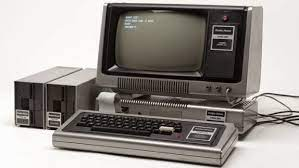
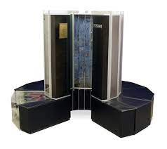
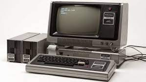
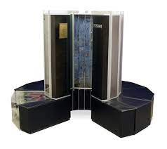

FOURTH GENERATION COMPUTERS...!!
- The period of fourth generation was from 1971-1980.
- Computers of fourth generation used Very Large Scale Integrated (VLSI) circuits.
- VLSI circuits having about 5000 transistors and other circuit elements with their associated circuits on a single chip made it possible to have microcomputers of fourth generation.
- Fourth generation computers became more powerful, compact, reliable, and affordable.
- As a result, it gave rise to Personal Computer (PC) revolution.
- In this generation, time sharing, real time networks, distributed operating system were used.
- All the high-level languages like C, C++, DBASE etc., were used in this generation.
-
Eg. DEC-10,
PDP-11,
STAR 1000, CRAY-1(Super Computer), CRAY-X-MP(Super Computer), etc.
 



Advantages :
- Computers of these generation produced very less amount of heat.
- Also the computing speed was much faster tahn first computers.
- There was less maintainance and hardware failure of these computers.
- Also, these computers were easily portable.
Disadvantages :
- There was a challenge faced in manufacturing the chips.
More about these computers click :